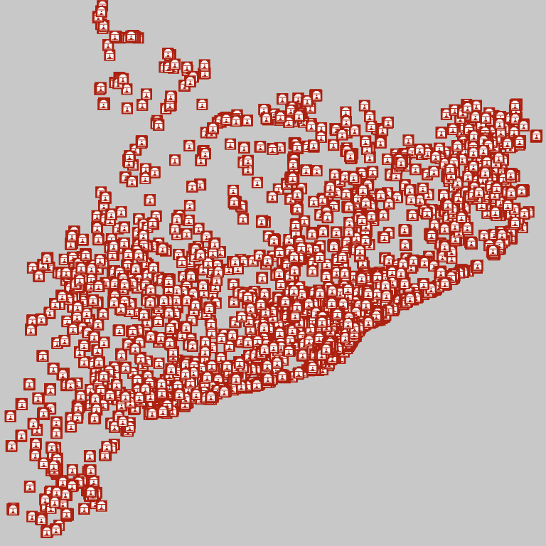
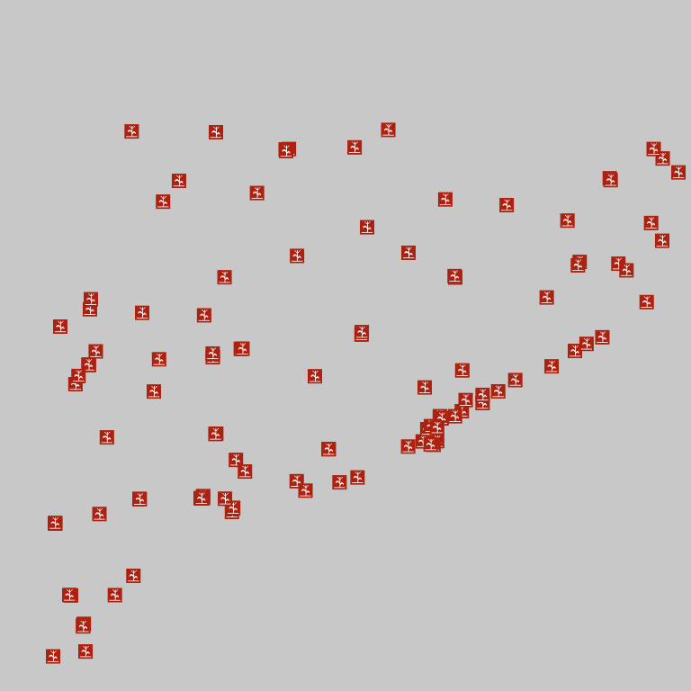

Note
| Fecha | Autores |
|---|---|
| 14 Febrero 2017 |
|
©2017 Wladimir Szczerban
Excepto donde quede reflejado de otra manera, la presente documentación se halla bajo licencia: Creative Commons (Creative Commons - Attribution - Share Alike: http://creativecommons.org/licenses/by-sa/3.0/deed.es)
Configuración de un archivo Mapfile (.map) para cargar una capa en formato ESRI shapefile (.shp).
Warning
Los todos los datos utilizados en este ejemplo son datos de ejemplo y no tienen ningún carácter oficial. Igualmente los datos pueden proceder de fuentes diferentes a las indicadas en la configuración del servicio y ser datos no reales.
Crear la carpeta del proyecto (mtig2017) donde crearemos y copiaremos todos los archivos. Es recomendable que la carpeta no esté en una ruta accesible desde Internet para evitar que los usuarios accedan directamente a nuestros datos.
Por ejemplo: crear la carpeta en C:\Users\XXXX\mtig2017
Crear el archivo equipamientos.map dentro de la carpeta del proyecto. Abrir el archivo con un editor de texto (Notepad++, Atom, Sublime, etc).
Crear el objeto MAP.
# Inicio arxivo MAP
MAP
#Nombre de la aplicación no debe contener espacios ni carácteres especiales
NAME equipamientos
#Estado
STATUS ON
#Extensión mapa [minx] [miny] [maxx] [maxy]
EXTENT 263747.60 4484436.53 527495.20 4748184.13
#Unidades del mapa
UNITS METERS
#Tamaño máximo de la imagen
MAXSIZE 4096
#Ruta de la cartografia
SHAPEPATH "datos"
#Color de fondo
IMAGECOLOR 255 255 255
#Formato de salida de la imagen
OUTPUTFORMAT
NAME "png8"
DRIVER AGG/PNG8
MIMETYPE "image/png"
IMAGEMODE RGBA
EXTENSION "png"
FORMATOPTION "QUANTIZE_FORCE=on"
FORMATOPTION "QUANTIZE_COLORS=256"
FORMATOPTION "GAMMA=0.75"
END
#Ruta librería proyecciones
CONFIG "PROJ_LIB" 'C:/ms4w/proj/nad/'
#Proyección por defecto del mapa
PROJECTION
"init=epsg:25831"
END
#Definició de las capacidades
WEB
IMAGEPATH "tmp/"
IMAGEURL "tmp/"
METADATA
OWS_TITLE "Aplicación OGC"
OWS_ABSTRACT "Ejemplo de interoperabilidad utilitzando Minnesota MapServer"
OWS_ENABLE_REQUEST "*"
OWS_ONLINERESOURCE "http://localhost:81/cgi-bin/mapserv.exe?map=C:/Users/XXXX/mtig2017/equipamientos.map"
OWS_SRS "EPSG:23031 EPSG:4326 EPSG:25831 EPSG:4258 EPSG:4230 EPSG:3857 EPSG:32631"
OWS_EXTENT "263747.60 4484436.53 527495.20 4748184.13"
WMS_FEATURE_INFO_MIME_TYPE "text/html"
OWS_ACCESSCONSTRAINTS "NINGUNO"
OWS_LIMITSCONSTRAINTS "NINGUNO"
OWS_FEES "NINGUNO"
OWS_ADDRESSTYPE "MAILING ADDRESS"
OWS_CITY "Barcelona"
OWS_STATEORPROVINCE "Barcelona"
OWS_CONTACTELECTRONICMAILADDRESS "test@icgc.cat"
OWS_CONTACTPERSON ""
OWS_CONTACTORGANIZATION "Institut Cartogràfic i Geològic de Catalunya"
OWS_ADDRESS "Parc de Montjuic sn"
OWS_POSTCODE "08038"
OWS_COUNTRY "Spain"
OWS_CONTACTPOSITION "Geostarters"
OWS_CONTACTVOICETELEPHONE ""
OWS_SERVICE_ONLINERESOURCE "http://catalegidec.icc.cat"
OWS_ROLE "Provaider"
OWS_KEYWORDLIST "Cataluña,servicio,mapa,equipamientos"
OWS_CONTACTFACSIMILETELEPHONE ""
OWS_HOURSOFSERVICE ""
OWS_CONTACTINSTRUCTIONS ""
OWS_ATTRIBUTION_ONLINERESOURCE "http://www.icgc.cat"
OWS_ATTRIBUTION_TITLE "ICGC"
OWS_BBOX_EXTENDED "True"
OWS_HTTP_MAX_AGE "3600"
LABELCACHE_MAP_EDGE_BUFFER "10"
OWS_SLD_ENABLED "true"
END
END
#definicion de la leyenda del mapa
#definicion de las capas del mapa
#Final arxiu MAP
END
Comprobar que no tenemos ningún error en el Mapfile. Abrir el navegador y escribir:
http://localhost:81/cgi-bin/mapserv.exe?map=C:/Users/XXXX/mtig2017/equipamientos.map
Comprobar que retorna el siguente mensaje:
mapserv(): Web application error. Traditional BROWSE mode requires a TEMPLATE in the WEB section, but none was provided.
Definir la capa del mapa.
Crear la carperta datos dentro del directorio del proyecto
Descargar el archivo
equipamientos.zipDescomprimir el archivo equipamientos.zip dentro de la carpeta datos
Crear la carperta images dentro del directorio del proyecto
Descargar el archivo
images.zipDescomprimir el archivo images.zip dentro de la carpeta images
Escribir la definicioń de la capa en el Mapfile. Justo debajo de donde dice #definicion de las capas del mapa agregamos lo siguiente.
LAYER NAME "administracio_publica" STATUS ON TYPE POINT GROUP "equipaments" DATA "eq_gencat_v1shp" TRANSPARENCY 100 CLASSITEM "TIPUS" LABELMINSCALE 150 LABELMAXSCALE 90000 TOLERANCE 3 DUMP TRUE PROJECTION "init=epsg:25831" END CLASS NAME "Administracio Publica" TEMPLATE 'info_new.htm' TEXT "[NOM]" STYLE COLOR 200 140 10 SYMBOL "images/administracio_publica.gif" SIZE 16 END LABEL ANTIALIAS TRUE FONT arial-bold TYPE TRUETYPE MINFEATURESIZE 16 MINDISTANCE 15 POSITION CC OFFSET 0 15 BUFFER 2 SIZE 8 COLOR 173 33 16 SHADOWCOLOR 218 218 218 SHADOWSIZE 2 2 OUTLINECOLOR 254 254 254 END END METADATA "OWS_title" "Administracio Publica" "ows_group_title" "Equipaments" "ows_featureid" "ID" "OWS_abstract" "Equipaments Gencat" "OWS_extent" "256900.000 4484809.998 533550.000 4751559.998" "gml_include_items" "all" "OWS_SRS" "EPSG:25831 EPSG:4326 EPSG:23031 EPSG:32631 EPSG:4258 EPSG:4230 EPSG:3857" END END # Layer
Verificar que funcione el getCapabilities. Abrir el navegador y escribir:
http://localhost:81/cgi-bin/mapserv.exe?map=C:/Users/XXXX/mtig2017/pein.map&request=getCapabilities&service=wmsNote
Debemos ver el archivo xml con la descripción de las capacidades del servidor.
Hacer la petión getMap para visualizar el mapa. Abrir el navegador y escribir:
http://localhost:81/cgi-bin/mapserv.exe?map=C:/Users/XXXX/mtig2017/pein.map&REQUEST=GetMap&SERVICE=WMS&VERSION=1.1.1&LAYERS=pein&FORMAT=image/png&STYLES=&SRS=EPSG:25831&BBOX=263747.60,4484436.53,527495.20,4748184.13&WIDTH=768&HEIGHT=768
Debemos ver como respuesta nuestro mapa con todos los equipamientos sin clasificación
|  |
Para clasificar los puntos del mapa debemos crear un EXPRESSION dentro de nuestro CLASS. Justo debajo del nombre del CLASS agregamos lo siguiente:
EXPRESSION ("[TIPUS]" == "Agricultura_Ramaderia_Pesca")
Cambiaremos el icono por la imagen correspondiente con agricultura. En lugar de SYMBOL “images/administracio_publica.gif” pondremos SYMBOL “images/agricultura.gif”
Si recargamos el mapa en el navegador ahora veremos muchos menos puntos y ha cambiado la simbolización.
|  |